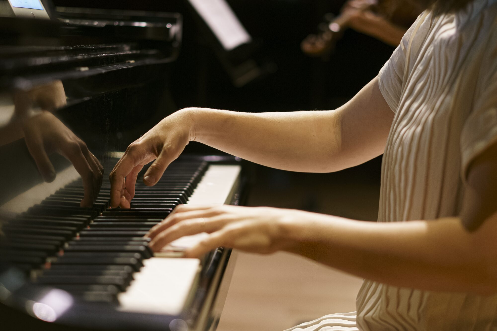

«Mother Goose»
Concierto en familia · Flushing Library, Queens · Sábado 21 de noviembre de 2026, 12:00
Maurice Ravel escribió Ma mère l’Oye en 1910 para dos niños, Mimie y Jean Godebski, los hijos de unos amigos: cinco cuentos para dos pianistas sentados ante un mismo teclado.
Se toca como se escribió, a cuatro manos, en la Flushing Library de Queens.
El programa
- Pavana de la Bella DurmientePavane de la Belle au bois dormant
- PulgarcitoPetit Poucet
- Laideronnette, emperatriz de las pagodasLaideronnette, impératrice des pagodes
- Los coloquios de la Bella y la BestiaLes entretiens de la Belle et de la Bête
- El jardín encantadoLe jardin féerique
Quién toca
- Josefina UrracaPiano
- Yalin ChiPiano
- Taylor HenningsActriz